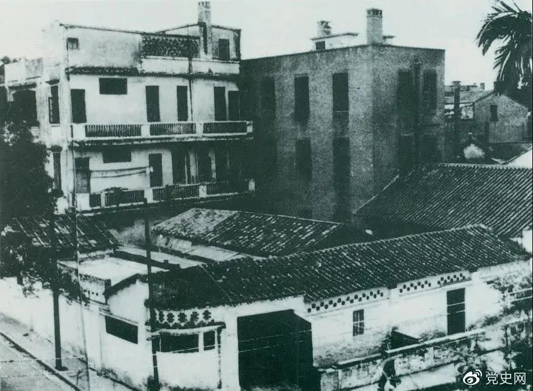
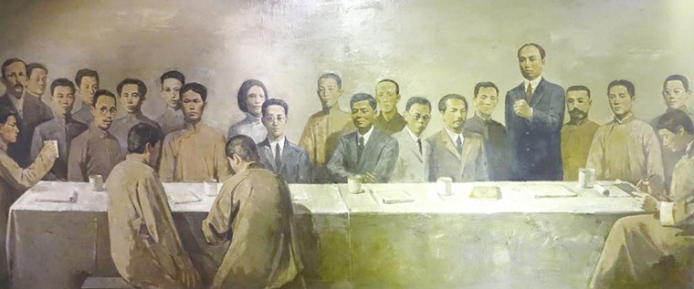

东南大学仪器科学与工程学院 寻迹梅庵实践团
官方微信
官方微博
寻 迹 梅 庵 ，薪 火 相 传
“统一战线”是中国共产党在民主革命时期战胜敌人的三大法宝之一。共产党对这一策略的认识，是有一个历史发展过程的。在党成立前，孙中山领导的国民党在南方有一定的影响和势力，并进行着反对北洋军阀政府的革命斗争。对于这样一个政党应该采取什么样的态度，党的“一大”通过的决议认为，中国共产党应采取独立的政策维护无产阶级的利益，不同其他党派建立任何联系。
“一大”后，共产国际代表马林到广西、广东考察了国民党及当地的革命运动。马林认为，国民党是一个多阶级联盟的革命政党，在南方有着广泛的政治基础，共产党应与其联合，共同进行斗争。马林并为此向国共两党提出了联合的建议。孙中山方面表示，愿意联合共产党，但由于国民党是一个大党，共产党员必须加入国民党，实行党内联合。而共产党内的大多数同志则表示，同意支持孙中山，但反对加入国民党。党的“二大”专门对此问题进行了讨论，通过了《关于“民主的联合战线”的决议案》，决定与全国的革新党派实行党外联合。中共的“党外联合”主张，没能得到孙中山的同意。
为了推动国共合作，共产党于1922年8月底，又在杭州西湖召开特别会议，专门讨论与国民党合作的方式问题。会议虽然决定在孙中山改组国民党的条件下，中共党员以个人名义加入国民党，但大多数同志对这种作法仍存疑虑，因此国共合作问题实际上没有解决。1923年1月，共产国际执委会作出《关于中国共产党与国民党的关系问题的决议》，对实行党内合作的形式进一步作了肯定。特别是京汉铁路大罢工的失败，使中国共产党从实践中认识到建立革命统一战线的重要。
为了统一全党的思想，妥善解决共产党与国民党合作，建立革命统一战线的问题，共产党召开了第三次全国代表大会。
1923年6月12日至20日，中国共产党第三次全国代表大会在广州东山恤孤院31号（现恤孤院路3号）召开。陈独秀、李大钊、毛泽东、蔡和森、陈潭秋、恽代英、瞿秋白、张国焘、李立三、项英等来自全国各地及莫斯科的代表近40人出席大会，他们代表了全国420名党员。共产国际代表马林参加了会议。
三大旧址：广州市恤孤院路3号
（原广州东山恤孤院路后街31号）
陈独秀主持会议并代表第二届中央执行委员会作报告。总结中共二大以来的工作情况，特别是京汉铁路工人大罢工的经验教训，着重阐明中国共产党同国民党建立联合战线的必要性。马林作了关于国际形势与国际工人运动的报告，瞿秋白作了关于出席共产国际第四次代表大会的报告。各地区代表报告了本地区的工作情况。大会讨论中就如何与国民党合作问题发生了激烈争论。陈独秀、马林赞成全体共产党员和产业工人都应参加国民党，并主张“一切工作归国民党”，以此推动国民革命运动；张国焘、蔡和森等强调保持共产党的独立性和加强党对工人运动的领导，反对全体共产党员特别是产业工人加入国民党。经过两天的激烈争论，大会接受共产国际关于共产党同国民党合作的指示，决定采取党内合作的形式同国民党建立联合战线，同时规定了保持党在政治上的独立性的一些原则。
大会的主要议程有三项：一、讨论党纲草案；二、讨论同国民党建立革命统一战线问题；三、选举党的中央执行委员会。
会议的中心议题是讨论与国民党合作、建立革命统一战线的问题。陈独秀在报告中，着重说明了中国共产党决定和国民党建立革命统一战线的依据和过程。代表们就共产党员以个人身份加入国民党、建立革命统一战线的问题进行了热烈的讨论。
经过讨论，大会接受了共产国际关于中国共产党同中国国民党进行合作的指示，通过了《关于国民运动及国民党问题的议决案》、《中国共产党第三次全国代表大会宣言》等文件。这些文件的中心思想是，党在现阶段“应该以国民革命运动为中心工作”，共产党员以个人身份加入国民党，采取党内合作的形式，同国民党建立联合战线，以完成反帝反封建的国民革命的重要任务。文件还规定了要保持中国共产党在政治上的独立性的一些原则。
大会选举陈独秀、蔡和森、李大钊、谭平山、王荷波、毛泽东、朱少连、项英、罗章龙等9人为中央委员，邓培、张连光、徐梅坤、李汉俊、邓中夏5人为候补中央委员，由陈独秀、蔡和森、毛泽东、罗章龙、谭平山（后由于谭调职，改为王荷波）5人组成中央局，陈独秀为委员长，毛泽东为秘书，罗章龙担任会计，负责中央日常工作。
党的三大根据马克思列宁主义的策略原则和共产国际的指示，结合中国革命的具体情况，充分发扬民主，在分析中国社会矛盾和明确中国革命性质的基础上，正确解决了建党初期党内在国共合作问题上存在的重大分歧，统一了全党的认识，正式确定了共产党员以个人身份加入国民党，与国民党进行党内合作的策略方针，使党能够团结一切可能联合的力量，共同完成反帝反封建的民主革命任务。
党的三大结束的当天，代表们来到黄花岗烈士墓前，在瞿秋白同志的指挥下高唱国际歌。中国共产党第三次代表大会，就在雄壮有力的国际歌声中胜利闭幕了。
中共三大会址纪念馆中的三大会场再现油画
中共三大是标志着中国共产党从创建时期进入大革命时期的里程碑式的重要会议。大会正式确立革命统一战线的方针政策，有力推动党和革命力量迅速壮大，推动党从比较狭小的圈子走向更广阔的政治舞台，成为党建设群众性的无产阶级政党的新起点，对中国共产党的发展、对中国革命的发展、对中国近现代历史的发展都产生了深远的影响，有着巨大的历史功绩。
中国共产党在以后的革命斗争实践中，逐渐不断总结经验教训，坚持和发展了三大确定的统一战线的方针，把中华民族绝大多数人团结起来，结成最广泛的革命统一战线，终于战胜了强大的敌人。在向社会主义过渡、社会主义建设，特别是改革开放和现代化建设的历史时期，党的统一战线理论和政策得到进一步的丰富和发展，统一战线的范围进一步扩大，统一战线发挥出越来越大的作用。在党的历史上具有承前启后重大意义的中共三大，将继续激励着我们奋勇前进。